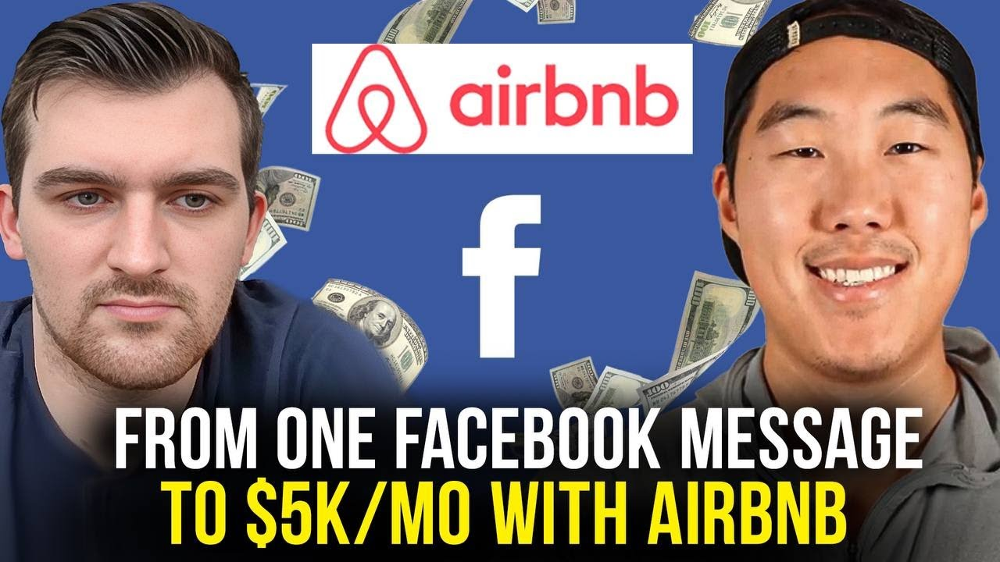

How Micah Hydrick Made $5,000 His First Month with One Facebook Message (2026 Case Study)

Micah Hydrick earns $5,000 per month from 1 Airbnb arbitrage property in Houston, Texas. Starting with no real estate experience and a fear of cold calling, he joined Legacy Investing Show and secured his first property through a single Facebook Marketplace message. Today, Micah manages everything in less than an hour per week while keeping his full-time job, with plans to scale to 4 properties generating $8,000/month by year-end.
This case study breaks down exactly how Micah built this Airbnb arbitrage business, including the Facebook Marketplace approach that works for introverts, his complete $15,000 property setup, and the exact systems he uses to automate operations.
In this article:
Quick Results: Micah's Airbnb Arbitrage Numbers
| Metric | Value | Context |
|---|---|---|
| First Month Revenue | $5,000+ | Gross, March 2024 |
| Properties | 1 | Houston area market |
| Average Nightly Rate | $250 | Often exceeded $300 |
| Setup Investment | $15,000 | Furniture, decor, amenities |
| Time to First Property | 5 months | From joining program |
| Weekly Time Commitment | <1 hour | Managing operations |
| Year-End Goal | $8,000/month | 4 total properties |
| Projected Net per Property | $1,500-$2,000 | Once stabilized |
Micah's Background: The Introvert Who Couldn't Cold Call
You don't need to be a natural salesperson to succeed in Airbnb arbitrage. Micah Hydrick is proof: as a self-proclaimed introvert who gets nervous with new people, he built a profitable short-term rental business without making a single cold call.
Micah grew up with entrepreneurship in his blood. His parents started a paintball park in Houston, Texas, eventually expanding to three or four locations before moving on to other ventures. He and his brothers were always entrepreneurial kids—making paper crafts to sell at school, buying candy on sale and reselling it at a markup. The hustle was familiar, even if the specific vehicle wasn't clear yet.
During college, Micah had an epiphany that shaped his entire approach to life. He researched the statistics on how Americans spend their time and discovered a sobering truth: if you work a 9-to-5 from age 18 to retirement, you spend roughly 30 years of your life working—time that isn't spent with the people you love.
"After realizing that like 30 years total of our life if you work a 9-to-5 from 18 to retirement isn't even with the people you love... that really hit me hard. So at the end of college I was like, you know what, I need to set up a system that brings me in cash flow."
That realization ignited a mission: build a system that generates cash flow to pay for life's expenses while preserving time and freedom. After college, Micah got a job but never stopped searching for that system.
His first attempts at entrepreneurship didn't go well. He and his brother launched an Amazon FBA business—it failed. They tried dropshipping, selling fireplaces online—that failed too. Burned by these experiences, Micah started ignoring the endless "make money" content flooding Instagram and Facebook.
Then he saw a video from Preston Seo.
Something about it felt different. The message aligned with what Micah had been searching for: financial freedom, time with family, a real path forward. Against his usual instincts, he signed up for the workshop.
"I don't normally go for those, but this time I did... he just kind of explained some of the same things that I felt like in life that I wanted to accomplish and be like financially free and be there for more time with the family."
Key Takeaway: Micah's failed businesses weren't wasted time—they taught him what he didn't want and primed him to recognize the right opportunity when it appeared. His introversion, which he initially saw as a weakness, actually made him a perfect fit for Airbnb arbitrage's messaging-based landlord outreach.
The Airbnb Arbitrage Journey: Micah's Timeline
September 2023: Taking the Leap
Situation: Skeptical but curious after seeing Preston's Instagram video
After years of ignoring online business opportunities following two failed ventures, Micah took a chance on Legacy Investing Show's Launchpad program. The messaging about financial freedom and family time resonated with his core values—the same values that had driven him since that college research project about how Americans spend their time.
What attracted him to this particular opportunity over others? The business model itself was introvert-friendly. Unlike sales businesses or customer-facing ventures, Airbnb arbitrage allowed him to communicate primarily through written messages and manage operations remotely.
November 2023: Going Deeper
Situation: Committed enough to upgrade programs
Two months after joining the Launchpad, Micah upgraded to the Roadmap program. He was seeing results from other students and wanted the full system, scripts, and support to accelerate his progress. This investment in education would prove crucial when he faced his first major hurdle.
November-December 2023: The Analysis Paralysis Phase
Situation: Stuck in research mode for six weeks
Here's where Micah hit the wall that stops most aspiring entrepreneurs: analysis paralysis. He spent roughly six weeks researching markets, analyzing properties, comparing neighborhoods, running the same numbers over and over again.
He looked at multiple markets around Houston. He considered Galveston for its tourism. He even explored College Station because of Texas A&M's massive alumni base and sports events. He researched the same neighborhoods, the same properties, comparing and re-comparing.
"I can't tell you how many times I researched the same darn region or neighborhood over and over again, part of that analysis paralysis, the same homes, comparing the same—that was a lot of the time wasting that happened."
The breakthrough came when he made a conscious decision: trust the numbers and take action. The potential was there. The equations worked. The calculator showed profit. At some point, you have to stop researching and start doing.
"I had to trust that if the numbers are there, you just do it. At the end of the day, the region, the neighborhood I picked—the numbers were there, the potential was there, it all worked out. I just had to make a conscious decision no matter how scary it was."
January 2024: The Facebook Message That Changed Everything
Situation: Terrified of cold calling, found an alternative approach
This is where Micah's story diverges from the typical Airbnb arbitrage playbook. Most students make dozens or hundreds of cold calls to landlords. Micah was too nervous to pick up the phone—so he didn't.
Instead, he turned to Facebook Marketplace. He found a property listing, crafted a message explaining his business model, and hit send.
Five minutes later, the landlord responded.
That single message led to a conversation, then a meeting with families, then a lease agreement. Micah had found his first property without ever making a cold call.
"I took the Facebook Marketplace messaging approach... I saw that and I was like, you know what, I can't handle talking to someone so I'm just going to actually start messaging people. It was literally the first message I sent—5 minutes later he messaged me back."
Micah acknowledges this rapid response was unusual: "I think that was an outlier for sure, that does not happen normally from what I understand." But by putting himself out there, he created his own luck.
First Property Stats:
-
Location: Houston area (30 minutes from his home)
-
Features: Pool, backyard space, recently renovated
-
Rent: Negotiated with landlord
-
Timeline: Facebook message to signed lease in weeks
February 2024: Going Live
Situation: Property launched, first guests booked
Micah's property went live in February 2024. Despite it being a relatively slow month (not peak season in Houston), he immediately started getting bookings. The property's pool, updated interior, and compelling photos attracted guests looking for something special.
There were unexpected challenges. The landlord had verbally promised the property would be cleaned and ready, but when Micah took possession, nothing had been cleaned—they'd moved everything but didn't vacuum, wipe down, or repaint anything. This cost extra money and time to remedy.
March 2024: First Full Month Results
Situation: $5,000 in gross revenue, exceeding projections
March delivered strong results. Micah had conservatively projected $4,000-$4,500 in revenue. The actual number came in just over $5,000—exceeding his estimates by 10-25%.
Even more impressive: his average nightly rate was $250, but most bookings came in around $300 per night. Guests were willing to pay premium prices for the quality experience Micah created.
How to Choose a Market for Airbnb Arbitrage: Micah's Houston Strategy
Houston is ideal for Airbnb arbitrage because of its diverse demand drivers and proximity to tourist destinations. Micah analyzed multiple markets before choosing to stay local, focusing on understanding what he knew best.
Why Houston Works for Short-Term Rentals
Micah made a deliberate choice to start in his home market. While this might mean slightly lower profit potential compared to more tourist-heavy areas, it provided crucial advantages for a first-time operator:
Familiarity: He understood the local neighborhoods, knew which areas attracted visitors, and could easily check on his property (just 30 minutes away).
Diverse Demand Drivers:
-
Galveston proximity: Houston serves as a staging point for tourists heading to Galveston beaches, about an hour to an hour and a half away
-
Spring break travelers: Visitors come to see family in Houston, often using it as a base for beach trips
-
Corporate travel: Houston's energy sector and medical center bring business travelers year-round
-
Wedding season: Late April and late May see significant booking spikes from wedding guests
-
Holiday gatherings: Thanksgiving and Christmas bring family visitors needing space
Understanding Seasonality
Micah studied his market carefully to set realistic expectations:
Peak Seasons:
-
March: Spring break travelers visiting family, heading to Galveston
-
Summer: Peak vacation season
-
Thanksgiving/Christmas: Family gatherings and holiday visitors
-
Late April/May: Wedding season creates unexpected spikes
Slower Months:
-
April: Post-spring break lull
-
September-October: Back to school season
"Weddings—a ton of weddings happen like at the end of April and at the end of May, so I did get a booking for two nights that's like I think it's like a $1,200 booking just because they're having a wedding."
Micah's Market Research Process
Before committing, Micah used a systematic approach:
Pro Tip: Don't let perfect be the enemy of good. Micah spent 6 weeks in analysis paralysis, repeatedly researching the same areas. Once he committed to trusting the numbers, everything accelerated.
Airbnb Arbitrage Strategies That Actually Work: Micah's Playbook
The difference between getting stuck and getting started often comes down to finding an approach that fits your personality. Micah attributes his success to three core strategies that worked specifically for an introvert without sales experience.
Strategy 1: The Facebook Marketplace Approach
What it is: Finding and contacting landlords through Facebook Marketplace rental listings instead of cold calling.
Why it works: Facebook Marketplace has become a legitimate platform for rental listings, especially among individual property owners (rather than property management companies). These landlords tend to be more approachable, open to unconventional arrangements, and responsive to messages.
For Micah specifically, this approach eliminated his biggest barrier: phone anxiety. He could craft his pitch carefully, edit before sending, and respond when ready rather than being put on the spot.
Micah's Results with This Strategy:
-
First message sent, first deal closed
-
5-minute response time from landlord
-
Built rapport through messaging before meeting in person
-
No cold calling required
"Being like an introvert slash shy and all that stuff, this one was an easier thing to do because it's over call or like the listing I got—that was through Facebook—so I didn't even have to know talk to the person over the phone."
Strategy 2: Professional Design on a Budget
What it is: Partnering with a designer friend to create a standout property using affordable furniture sources.
Why it works: Airbnb is a visual platform. Guests scroll through dozens of listings before clicking. Professional design—even on a budget—separates you from amateur-looking listings. In competitive markets like Houston, standing out is essential.
Micah hired a friend with a degree in interior design. Almost everything came from Amazon and IKEA, per her recommendations. These aren't expensive boutique pieces—they're smart choices that look great without breaking the bank.
Micah's Results with This Strategy:
-
Complete property furnished for approximately $15,000
-
Professional-looking photos that attracted premium bookings
-
Nightly rates often exceeded $300 despite conservative $250 target
-
Guests specifically commented that the property looked "fun, exciting, and inviting"
What the Budget Covered:
-
Living areas: Sectional seating, TV setup, coffee tables, accent furniture, greenery (fiddle leaf fig)
-
Bedrooms: Quality mattresses, bed frames, nightstands, bedding sets
-
Kitchen: Complete cookware, small appliances, dishes and silverware
-
Outdoor space: Fire pit, pool accessories, cornhole set, cafe lights, deck furniture
Strategy 3: Network-Based Team Building
What it is: Building your operations team (cleaners, photographers, handymen) through personal network connections rather than hiring strangers.
Why it works: Trust is built-in with network connections. They're more likely to do quality work, respond quickly, and give you favorable rates. Micah found his cleaners through his congregation, his photographer through work, and his interior designer through friendship.
Micah's Results with This Strategy:
-
Discounted photography from a colleague who does real estate photography on the side
-
Reliable cleaners from his religious congregation
-
Interior design consultation from a friend with professional credentials
-
Trust-based relationships that reduce operational stress
"I'm just a networker too, like when it comes to business stuff. Everyone I did for—handyman, cleaners, the photographer, interior designer—all those people were who I've networked with over the last year or two years."
Micah's Airbnb Arbitrage Results: The Numbers
March 2024 delivered $5,000 in gross revenue—exceeding projections by over 10%. Here's the complete financial picture from Micah's first full month operating.
Revenue Performance
| Metric | Projected | Actual |
|---|---|---|
| Gross Revenue | $4,000-$4,500 | $5,000+ |
| Average Nightly Rate | $250 | $250-$300 |
| Occupancy | Moderate | Strong for March |
The property outperformed conservative estimates. Most importantly, Micah achieved premium nightly rates—often around $300—despite being a new listing without established reviews.
Understanding the First-Month Economics
Micah's first month showed zero profit on paper—but context matters. He was covering February rent (before going live), dealing with unexpected landlord-related expenses, and investing in getting everything perfect. These are startup costs, not ongoing expenses.
His projection for stabilized operations: $1,500-$2,000 monthly net profit once the business normalizes.
Year-End Goals
| Goal | Target |
|---|---|
| Properties | 4 total |
| Monthly Profit | $8,000 combined |
| Weekly Time Investment (setup) | 4-6 hours |
| Weekly Time Investment (maintenance) | 30 min - 1 hour per property |
Key Milestones Achieved
-
First property live: February 2024, 5 months after joining program
-
Exceeded revenue projections: $5,000+ vs $4,000-$4,500 estimate
-
Premium pricing achieved: $300/night vs $250 target rate
-
Maintained full-time job: Less than 1 hour/week to manage property
-
Automated operations: Systems in place for pricing and communication
Long-Term Vision
Micah plans to stay with his current employer for three years to capture valuable benefits—bonuses and stock options that come with tenure. But the end goal is clear:
"If I didn't have these benefits, I would 100% quit at the end of the year when I'm bringing in $8,000 a month, because that way I have the time with my family, I can cover my bills, and I don't need that anymore."
Airbnb Arbitrage Lessons: What Micah Learned the Hard Way
Every deal teaches something—usually through pain. Micah's first property came with learning experiences that will save you time and money.
"My big things honestly that I would just say is: make the decisions, give yourself timelines, make decisions, don't get stuck, and then follow as perfectly as you can every single video, all the classroom teachings."
Lesson 1: Get Everything in Writing
The Mistake: Trusting verbal agreements with the landlord
What Happened: Micah and the landlord got along well. Their families connected. Trust was established. So when the landlord made verbal promises about the property's condition and timeline, Micah didn't push for written documentation.
The result? The property wasn't cleaned when Micah took possession. The landlord stayed longer than expected due to timing issues with closing on a new house. Things that were "already fixed" turned out to have problems—like a pool heater with a leak that increased both gas and water bills.
Why This Matters: Even the nicest landlord can forget verbal commitments or remember them differently. Written agreements protect both parties and prevent misunderstandings.
"My big thing is like if I could go back, I get everything, everything in writing, everything in the contract."
Lesson 2: Verify the Property Yourself
The Mistake: Taking the landlord's word about property condition
What Happened: The landlords said they'd just renovated—replaced the heater, updated various systems. Micah trusted this. When he got the property, the pool heater had a leak, and there were other issues not mentioned.
"I also trusted them and they said that everything was working fine, they just renovated, replaced the heater, replaced this, this and that—but at the end of the day that was not 100% true."
Why This Matters: Landlords aren't necessarily trying to deceive you, but they may not know about every issue. What seems "fine" to them might be a problem for a short-term rental operation with guests expecting everything to work perfectly.
Lesson 3: Control Your Maintenance Team
The Mistake: Being forced to use the landlord's contractors exclusively
What Happened: The landlord required Micah to use their contractors for repairs. The turnaround time was painfully slow, leading to guest complaints and operational headaches. Micah had his own handyman ready but couldn't use him without paying out of pocket.
"The turnaround time is way too long and I've actually had a few issues with guests because of the turnaround time."
Why This Matters: In short-term rentals, speed matters. A broken amenity affects every guest until it's fixed. Slow contractors cost you reviews and bookings.
Lesson 4: Invest in Design Help
The Mistake: This wasn't actually a mistake—Micah did it right
What Happened: By partnering with an interior designer friend, Micah created a property that stands out in photos and delivers a premium guest experience. The relatively small investment in professional design guidance multiplied his property's appeal.
Why This Matters: Airbnb is a visual platform. Guests scroll through dozens of listings before clicking. Professional design—even on a budget—separates you from amateur-looking listings.
Lesson 5: Just Start
The Mistake: Six weeks of analysis paralysis
What Happened: Micah spent roughly six weeks researching the same markets, the same neighborhoods, running the same calculations. The numbers were good from the start—he just couldn't pull the trigger.
Why This Matters: Perfect information doesn't exist. At some point, you have enough data to make a decision. Delaying costs you time, money, and momentum.
"I had to trust that if the numbers are there, you just do it... at the end of the day, I just had to make a conscious decision no matter how scary it was or risky I thought it was or whatever the other excuses or reasons were—I just had to go."
Best Tools for Airbnb Arbitrage: Micah's Tech Stack
Automation makes Airbnb arbitrage manageable alongside a full-time job. Here's what Micah uses to run his operation in under an hour per week.
Essential Tools Overview
| Category | Tool | Purpose | Why Micah Uses It |
|---|---|---|---|
| Dynamic Pricing | Price Labs | Automated rate optimization | Adjusts rates based on demand, events, market conditions |
| Property Management | Guesty | Centralized operations | Messaging, booking management, automation |
| Cleaning Coordination | Turno (planned) | Cleaner scheduling | Will use when current cleaning team moves |
| Booking Platform | Airbnb + VRBO | Guest acquisition | Multi-platform exposure through Guesty integration |
Price Labs for Dynamic Pricing
What it does: Automatically adjusts pricing based on demand, events, seasonality, and market conditions.
How Micah uses it: Sets base prices for the property, then lets Price Labs adjust rates up or down based on booking patterns and market demand. This ensures he captures premium rates during high-demand periods (like wedding season) without manually monitoring the market.
Pro tip: Use Price Labs instead of Airbnb's built-in Smart Pricing—it's more sophisticated and optimizes for profit, not just bookings.
Guesty for Property Management
What it does: Handles guest messaging with automated responses, manages bookings across platforms, and centralizes operations.
How Micah uses it: Links his Airbnb and VRBO listings, automates check-in instructions and common questions, manages calendar synchronization. He's still learning some features (like the Venmo interface) but finds it handles the core functions well.
Pro tip: Guesty is less beginner-friendly than Airbnb's native tools, but more powerful for automation. Invest time in learning it properly.
Turno for Cleaning Coordination (Planned)
What it does: Schedules cleaners automatically based on checkout/check-in times, manages multiple cleaning teams.
How Micah will use it: Currently uses cleaners from his congregation, but they're relocating. He has Turno set up and a backup cleaner ready for when the transition happens.
Pro tip: Build relationships with multiple reliable cleaning teams. Having backups prevents operational emergencies.
Micah's Advice for Airbnb Arbitrage Beginners
"Make the decisions, give yourself timelines, don't get stuck, and then follow as perfectly as you can every single video, all the classroom teachings. Take the extra time—you're going to get more money out of it at the end of the day."
If Micah were starting over today, here's exactly what he would do:
Step 1: Getting Started (Week 1-2)
Commit to the training fully. Don't skip videos or cut corners thinking you'll save time. Micah admits he skipped some content due to life circumstances and wishes he hadn't.
-
Complete all training modules systematically
-
Take notes on specific scripts and processes
-
Set clear timelines for each phase
-
Don't let research extend indefinitely
Step 2: Finding Properties (Week 3-6)
If cold calling terrifies you, embrace the Facebook Marketplace approach. It works and eliminates the phone anxiety barrier.
-
Search Facebook Marketplace for rentals in your target area
-
Run the numbers on each promising property
-
Craft honest, simple messages to landlords
-
Respond quickly when they reply
-
Build genuine rapport—your families might end up getting along
Step 3: Setting Up Your First Property (Week 7-10)
Invest in design help and quality photography. The upfront cost pays for itself in premium bookings.
-
Partner with a designer (friend, student, or affordable consultant)
-
Shop smart at Amazon and IKEA
-
Focus on creating "photography moments"
-
Hire a real estate photographer—network for discounts
-
Get everything in writing with your landlord
Step 4: Building Systems (Month 3+)
Automate from day one. Use Price Labs, Guesty, and cleaning coordination tools to keep time investment minimal.
-
Set up dynamic pricing immediately
-
Automate guest messaging for common questions
-
Build a reliable team (cleaners, handyman, photographer)
-
Have backups for critical team members
Mindset Advice from Micah
The biggest obstacle isn't knowledge or capital—it's psychology. Micah lost 6 weeks to analysis paralysis, repeatedly researching the same neighborhoods because he couldn't bring himself to commit.
The cure? Trust the numbers. If the calculator shows profit, the potential is real. At some point, you have to stop analyzing and start doing.
"At the end of the day, I just had to make a conscious decision no matter how scary it was or risky I thought it was or whatever the other excuses or reasons were—I just had to go. And I think you said something really important: a lot of people think you're just going to put all your chips on red or black. That's not what we're talking about here. We're talking about making the calculated decision."
Watch Micah's Full Interview
Video highlights:
-
0:00 - Introduction and background
-
5:30 - The analysis paralysis phase
-
8:45 - Facebook Marketplace messaging approach
-
14:20 - Property setup and design process
-
18:30 - First month financial breakdown
-
21:00 - Future goals and lessons learned
Frequently Asked Questions
How much money can you make with Airbnb arbitrage in your first month?
Micah generated $5,000 in gross revenue in his first month (March 2024) with a single property in Houston. His average nightly rate was $250, though many bookings came in around $300. His conservative projections were $4,000-$4,500, so he exceeded estimates by 10-25%.
First month profit was zero due to startup costs—covering February rent before going live, unexpected repairs, and initial setup expenses. Once stabilized, Micah projects $1,500-$2,000 monthly net profit per property.
Can you really find Airbnb properties without cold calling?
Absolutely. Micah's entire first deal came through Facebook Marketplace messaging. He never made a single cold call. While cold calling reaches more landlords faster, it's not the only path. Facebook Marketplace, Craigslist, and even driving-for-dollars to find FSBO (for sale by owner) signs can work for those who prefer written communication over phone calls.
The key is volume. Micah got lucky with a 5-minute response on his first message—that's unusual. Expect to send many messages before finding a responsive landlord. But if cold calling feels impossible for your personality, know that alternatives exist.
How does Airbnb arbitrage work for introverts?
Micah specifically chose this business model because it accommodates introverts. Here's why:
-
Initial outreach can happen through messages instead of calls
-
Landlord relationships build over time rather than through high-pressure conversations
-
Guest communication is almost entirely through the platform's messaging system, automated through tools like Guesty
-
Day-to-day operations involve coordinating with cleaners and handymen via text
You're rarely in high-pressure, face-to-face situations. Once you establish relationships, ongoing communication becomes comfortable because these people already know you.
What's the realistic timeline for a first Airbnb property?
Micah took 5 months from joining the program to going live, but he admits 6+ weeks of that was wasted in analysis paralysis. Here's a more realistic breakdown:
-
Weeks 1-2: Program training, market research basics
-
Weeks 3-4: Deep market analysis, property criteria definition
-
Weeks 5-8: Active property search, landlord outreach
-
Weeks 9-12: Lease signing, property setup, going live
Most focused students secure their first property in 30-60 days. The biggest time sink? Overthinking markets and delaying outreach. The cure? Set deadlines and trust your analysis.
Start Your Airbnb Arbitrage Journey
Ready to build your own Airbnb arbitrage business—even if you hate cold calling?
Micah proved that introverts can succeed in this business. His Facebook Marketplace approach eliminated the phone anxiety that stops many beginners. Five months after joining Legacy Investing Show, he had a property generating $5,000/month.
Learn more about Legacy Investing Show →
Related Success Stories
Helpful Resources
About Legacy Investing Show
Legacy Investing Show is Preston Seo's comprehensive Airbnb arbitrage training program. Since its founding, the program has:
-
Trained 2,000+ students across the United States
-
Generated $10M+ in cumulative student revenue
-
Built a community of active investors sharing strategies and support
-
Provided scripts, templates, and systems that work for all personality types
Preston Seo has personally built a $15 million real estate portfolio generating over $400,000 per year in net profit from short-term rentals. He created Legacy Investing Show to teach the exact systems that scaled his business.
blog resources | Watch free training →
This case study is based on Micah Hydrick's video interview conducted in April 2024. All statistics and quotes are directly from Micah's experience. Individual results vary based on market, effort, and capital invested.
Last updated: January 26, 2026
Preston Seo
Real estate investor and financial educator helping people build generational wealth through smart investing strategies. Founder of Legacy Investing Show with a $15 million real estate portfolio generating over $400,000 per year in net profit.
Frequently Asked Questions
How much money can you make with Airbnb arbitrage in your first month?
Micah Hydrick generated $5,000 in gross revenue in his first month (March 2024) with a single property in Houston, Texas. His average nightly rate was $250, though he often exceeded $300 per night on bookings. Results vary based on market, property type, and seasonality.
Can you start Airbnb arbitrage without cold calling landlords?
Yes. Micah used Facebook Marketplace messaging instead of cold calling to find his first property. He sent one message and received a response within 5 minutes, eventually signing a lease without ever making a single phone call. This approach works well for introverts.
How much does it cost to start Airbnb arbitrage?
Micah invested approximately $15,000 to furnish his first property in Houston, which included all furniture, outdoor amenities like a fire pit, pool accessories, decor, and professional photography. This covered a large property with a pool. Smaller properties may require less.
Is Airbnb arbitrage good for introverts?
Yes. Micah specifically chose Airbnb arbitrage because it doesn't require face-to-face sales or doorstep interactions. Everything can be done over calls, messages, or even just Facebook Marketplace. Guest communication is primarily through the Airbnb platform.
How long does it take to get your first Airbnb arbitrage property?
Micah joined Legacy Investing Show in September 2023 and went live with his first property in February 2024 - about 5 months. However, 6 weeks of that was spent in analysis paralysis. With focused action, most students can secure a property in 30-60 days.
What markets are good for Airbnb arbitrage near Houston?
Micah operates in the Houston area, which benefits from proximity to Galveston (tourist destination), strong corporate travel demand, and events throughout the year. Spring break, summer, and holidays are peak seasons. Late April and May see spikes from wedding season.
Do you need real estate experience for Airbnb arbitrage?
No. Micah had no real estate experience before starting. His background was in entrepreneurship - he had tried Amazon FBA and dropshipping, both of which failed. Legacy Investing Show's training, scripts, and community helped him overcome the learning curve.
What is the Facebook Marketplace method for finding Airbnb properties?
Instead of cold calling landlords, you can message property owners directly through Facebook Marketplace rental listings. Search for rentals in your target area, analyze the numbers, then send a message explaining your Airbnb arbitrage business model. Micah got his first deal from his very first message.